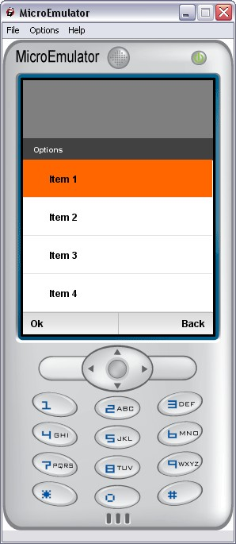

Menu prototype

Display a menu with options list.
Note:
Menu include MenuBar prototype.
Style fields
- SFInt32 nbElements - Number of elements in the list
- MFString elementsLabels - Array of element label
- MFInt32 elementsStates - Elements states. 0 = available; -1 = not available (greyed)
- MFInt32 elementsSeparators - Elements separators. 0 = separator; -1 = no separator
- MFString leftLabels - Left label
- MFString rightLabels - Right label
- MFString images - Separator icon
- MFString style - Path to the CSS node associated to Menu proto
- MFString menuFocusbarStyle - Path to the CSS specific node associated to the focusbar in Menu proto
- SFVec2f screenSize - Size of the screen where the application is displayed
- SFVec2f textScale - Use for scaling text if necessary (phone with small fonts)
Exposed Fields
- SFBool enable - Enable/disable MenuBar Buttons
- SFBool hide - Sends FALSE when the menu starts to slide up and sends TRUE when the menu finished sliding down
- SFInt32 selection - Selected item in the menu list
Event in
- SFInt32 update - Update the list and position focus on the given element.
- Call update is needed if Styles fields are modified
Event Out
- SFTime leftButtonClicked - Time when push left button
- SFTime rightButtonClicked - Time when push right button
Slider,
MenuBar,
SimpleList,
TouchCursor